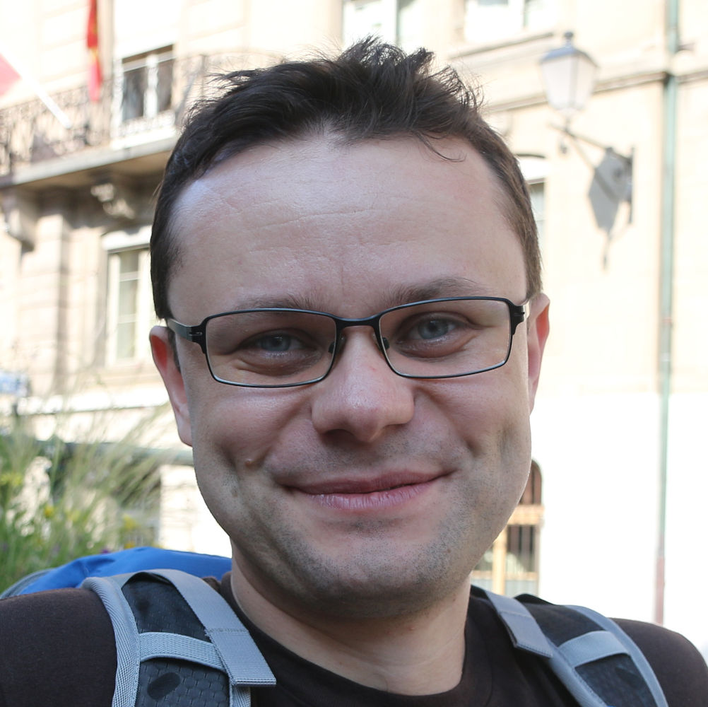

Cătălin Hrițcu
Tenured faculty and head of the Formally Verified Security group
at the
Max Planck Institute for Security and Privacy (MPI-SP)
in Bochum, Germany.
I am also Adjunct Professor (APL) in the Faculty of Computer Science
of Ruhr University Bochum (RUB)
as well as a member of HGI and
of the CASA Cluster of Excellence at RUB.
Between October 2013 and April 2020 I was a
tenured researcher (chargé de recherche)
at Inria Paris
in the Prosecco team.
Between May 2011 and
September 2013 I was a Postdoctoral Research Associate at
the University of Pennsylvania,
working under the supervision
of Benjamin
C. Pierce.
In the fall of 2016 I held a Visiting Researcher position at
Microsoft Research Redmond.
I received my PhD
from Saarland
University in Saarbrücken, Germany
and also a Habilitation from ENS Paris.
Quick Links:
Contact;
Interests;
Group;
Publications;
Talks;
Teaching;
Tools;
Misc
Recent Research Projects
News/Events
- Security Foundations was released as the
7th volume of the Software Foundations textbook series in Jan 2026.
This volume originates from courses we are teaching at Ruhr Uni Bochum.
- Distinguished Paper Award at CSF 2025 for
FSLH: Flexible Mechanized Speculative Load Hardening
-
IEEE Symposium on Security and Privacy
(Associate PC Chair in 2026,
also PC Member in 2020)
- Computer Security Foundations, CSF (Steering Committee Member since 2024,
Test-of-Time Awards Chair in 2023 and 2024; also PC Member in 2020, 2021 and 2024)
- CSF 2026 submission deadlines:
24 July 2025, 9 October 2025, 29 January 2026
- CSF 2026: July 26-29, Lisbon, Portugal (collocated with FLoC 2026)
- Certified Programs and Proofs, CPP (Steering Committee Chair since 2021;
also PC Chair and Conference Chair in 2020 and 2021; also PC member in 2016)
- CPP 2026 conference: 12-13 January 2026, Rennes, France (with POPL)
- Principles of Secure Compilation, PriSC
(Steering Committee Chair 2019--2023,
Steering Committee Member since 2023,
and PC Chair in 2018)
- Roberto "Rob" Blanco, previously PostDoc in my group, started as Associate Professor at TU Eindhoven in May 2025.
-
International Conference on Functional Programming, ICFP
(PC Member in 2025)
- Zoe Paraskevopoulou,
former MSc intern in my group and longer-term collaborator, took an Assistant Professor position at
the National Technical University of Athens in September 2024.
-
Computer and Communications Security, CCS
(Track PC Chair for Formal Methods and Programming Languages in 2024,
also PC Member in 2018)
-
Transactions on Privacy and Security, TOPS (Editor May 2024--June 2025)
- Danel Ahman, former PostDoc in my group, started as Associate Professor at University of Tartu in January 2024.
- Adrien Durier, former PostDoc in my group, started as Associate Professor (Maître de Conférences) at Université Paris-Saclay and LMF in September 2023.
- Théo Winterhalter, former PostDoc in my group, took a tenured researcher position (CR) at Inria Saclay, in Deducteam, starting in October 2022. Kenji Mailard, graduated PhD student I supervised, has obtained a similar Inria position (ISFP), in the Gallinette team in Nantes.
- Arthur Azevedo de Amorim, graduated PhD student I co-supervised at University of Pennsylvania, started as Assistant Prof. at Rochester Institute of Technology in Jan 2023.
- Guido Martínez, co-supervised student at CIFASIS-CONICET and UNR, Argentina, started as a Research Software Engineer at Microsoft Research in Redmond in Jan 2023.
-
Principles of Programming Languages, POPL
(Artifact Evaluation Chair in 2018 and 2019;
also PC Member in 2017 and 2024)
- POPL 2026 symposium: 11-17 January 2026, Rennes, France
E-mail: catalin.hritcu@gmail.com or catalin.hritcu@mpi-sp.org
Address:
Universitätsstraße 142, 44799 Bochum, Germany
On the RUB Campus, Building: MB (aka TZR), Floor 1, Office: 1/59
Research Interests
My research is primarily focused on developing rigorous formal
techniques for solving security problems. I am
particularly interested in:
-
formal methods for security:
secure compilation,
compartmentalization,
memory safety,
speculative execution defenses,
information flow control,
security protocols
-
programming-languages techniques:
program verification,
machine-checked proofs,
dependent types,
formal semantics,
property-based testing
-
design and verification of security-critical systems:
compilation chains,
reference monitors,
tagged hardware architectures,
high-assurance crypto
Formally Verified Security Research Group
I am very fortunate to work with a group of outstanding students and starting researchers:
For a complete list of past members of my group please look here.
Recent Publications and Drafts
For a complete list of my papers please look here
(also on DBLP and Google Scholar).
-
Basile Schlosser,
Jérémy Thibault, and
Cătălin Hrițcu.
Blame-aware Recomposition for Formally Secure Low-level Compiler Backends.
Presented at PriSC. January 2026.
-
Cezar-Constantin Andrici,
Danel Ahman,
Cătălin Hrițcu,
Guido Martínez,
Abigail Pribisova,
Exequiel Rivas, and
Théo Winterhalter.
Towards formally secure compilation of verified F* programs against unverified ML contexts (Extended Abstract).
Presented at PriSC. January 2026.
-
Danel Ahman,
Karthikeyan Bhargavan,
Barry Bond,
Jay Bosamiya,
Christopher Brzuska,
Antoine Delignat-Lavaud,
Cédric Fournet,
Aymeric Fromherz,
Sydney Gibson,
Chris Hawblitzel,
Cătălin Hrițcu,
Markulf Kohlweiss,
Guido Martínez,
Haobin Ni,
Bryan Parno,
Jonathan Protzenko,
Tahina Ramananandro,
Aseem Rastogi,
Exequiel Rivas,
Nikhil Swamy, and
Santiago Zanella-Béguelin.
Project Everest:
Perspectives from Developing Industrial-grade High-Assurance Software.
Accepted at TOPLAS. Draft from September 2025.
-
Jérémy Thibault,
Joseph Lenormand, and
Cătălin Hrițcu.
Nanopass Back-Translation of Call-Return Trees for Mechanized Secure Compilation Proofs.
In 16th International Conference on Interactive Theorem Proving (ITP).
LIPIcs, Volume 352, pp. 29:1-29:20, Schloss Dagstuhl – Leibniz-Zentrum für Informatik, September 2025.
-
Cezar-Constantin Andrici,
Danel Ahman,
Cătălin Hrițcu,
Ruxandra Icleanu,
Guido Martínez,
Exequiel Rivas, and
Théo Winterhalter.
SecRef*: Securely Sharing Mutable References Between Verified and Unverified Code in F*.
PACMPL, 9(ICFP). October 2025.
-
Jonathan Baumann,
Roberto Blanco,
Léon Ducruet,
Sebastian Harwig, and
Cătălin Hrițcu.
FSLH: Flexible Mechanized Speculative Load Hardening.
In 38th IEEE Computer Security Foundations Symposium (CSF).
June 2025. Distinguished Paper Award.
-
Jérémy Thibault,
Roberto Blanco,
Dongjae Lee,
Sven Argo,
Arthur Azevedo de Amorim,
Aïna Linn Georges,
Cătălin Hrițcu, and
Andrew Tolmach.
SECOMP: Formally Secure Compilation of Compartmentalized C Programs.
In 31th ACM SIGSAC Conference on Computer and Communications Security (CCS), pages 1061–1075. ACM, October 2024.
-
Cezar-Constantin Andrici,
Ștefan Ciobâcă,
Cătălin Hrițcu,
Guido Martínez,
Exequiel Rivas,
Éric Tanter, and
Théo Winterhalter.
Securing Verified IO Programs Against Unverified Code in F*.
PACMPL, 8(POPL):74:1--74:34, January 2024.
-
Roberto Blanco,
Christian Doczkal,
Jakob Feldtkeller,
Tim Güneysu, and
Cătălin Hrițcu.
Short Paper: Mechanized Proofs of Masking Security.
18th Workshop on Programming Languages and Analysis for Security (PLAS 2023 at
CCS 2023).
November 2023.
-
Philipp G. Haselwarter,
Benjamin Salling Hvass,
Lasse Letager Hansen,
Théo Winterhalter,
Cătălin Hrițcu, and
Bas Spitters.
The Last Yard: Foundational End-to-End Verification of High-Speed Cryptography.
In 13th ACM SIGPLAN International Conference on Certified Programs and Proofs (CPP), pages 30–44. ACM, January 2024.
-
Philipp G. Haselwarter,
Exequiel Rivas,
Antoine Van Muylder,
Théo Winterhalter,
Carmine Abate,
Nikolaj Sidorenco,
Cătălin Hrițcu,
Kenji Maillard, and
Bas Spitters.
SSProve: A Foundational Framework for Modular Cryptographic Proofs in Coq.
In ACM Transactions on Programming Languages and Systems (TOPLAS).
Volume 45, Issue 3, July 2023.
Talks
Here are my recent and upcoming talks. For a complete list of my talks please look here.
- Announcing Security Foundations
- My Group's Journey in Secure Compilation
- SECOMP: Formally Secure Compilation of Compartmentalized C Programs
- Short teaser for our courses at Ruhr Uni Bochum
- Formally Verified Security
Teaching
Co-author of 3 volumes of the Software Foundations textbook:
Logical Foundations,
Programming Language Foundations, and
Security Foundations (main author).
Here are my recent courses. For a complete list of my teaching please look here.
- Recent: Foundations of Programming Languages, Verification, and Security course at Ruhr Uni Bochum, April--July 2025
(previously: Winter 2023--24)
- Recent: Proofs are Programs course at Ruhr Uni Bochum, October 2024--February 2025
(previously: Summer 2023)
- Functional Programming course at Ruhr Uni Bochum, April--July 2024
(more recently without my participation: Winter 2025-26)
- Writing and Verifying Functional Programs in Coq course at
Summer School on Cryptography, Blockchain, and Program Verification, Mathinfoly 2019,
24-31 August 2019 at INSA, Lyon, France
- Program Verification with F* course at Summer School on
Verification Technology, Systems, and Applications, VSTA 2019,
1-5 July 2019 at University of Luxembourg
- Formally Secure Compartmentalizing Compilation course at
International School on Foundations of Security Analysis and Design (FOSAD),
27-28 August, 2018, Bertinoro, Italy
- Program Verification with F* course at
EPIT 2018 Software Verification Spring School, 7-11 May, 2018, Aussois, France
Here are the software projects in which I was recently involved.
For a complete list of software please look here.
Misc
- Curriculum vitae
- Github account
- Pronouncing my name: /kətəlin hritsku/, mp3, aiff
- Spelling my name in LaTeX:
C\u{a}t\u{a}lin Hri\cb{t}cu after doing \usepackage{combelow}
- Spelling my name in HTML:
Cătălin Hrițcu